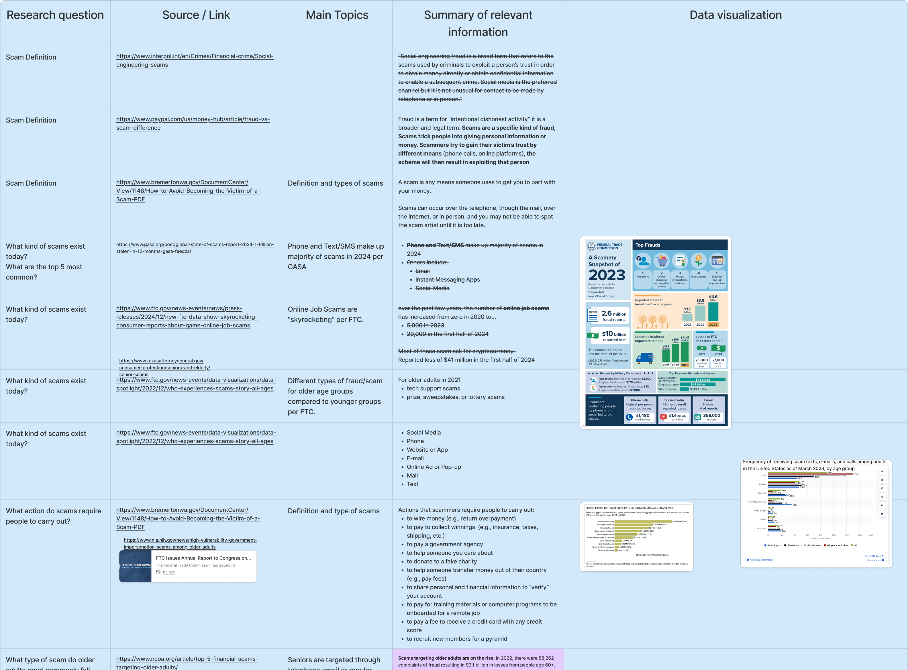
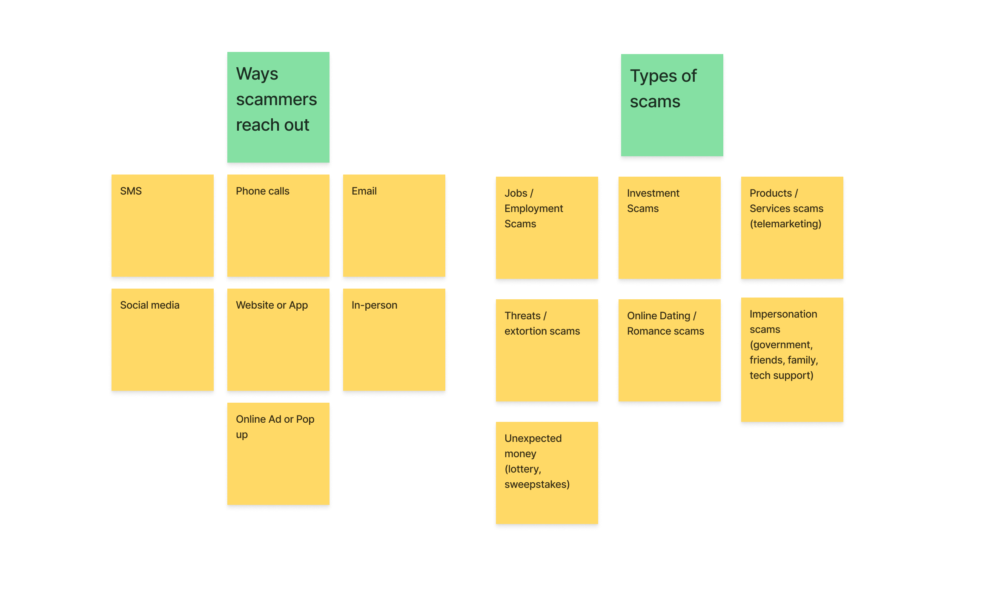
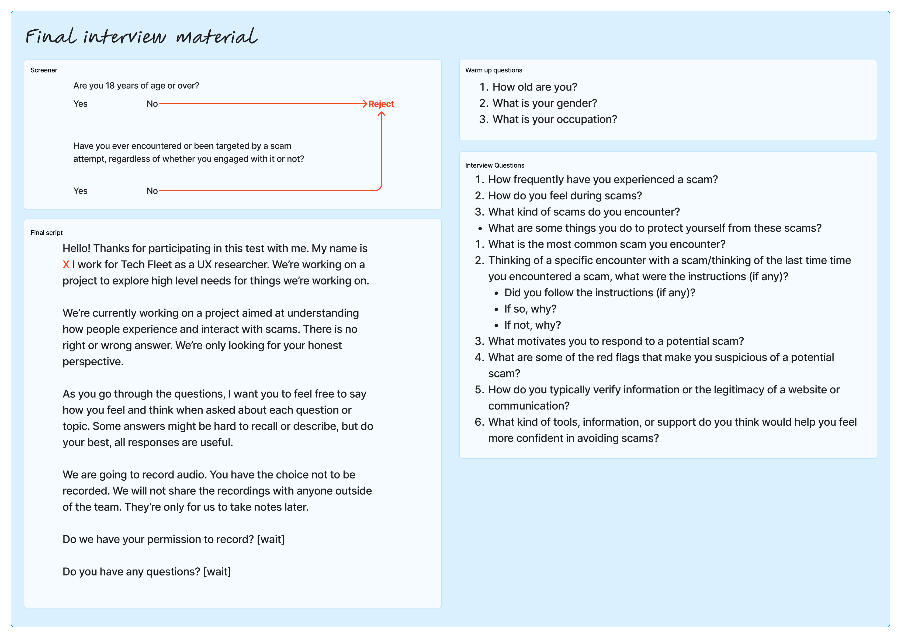
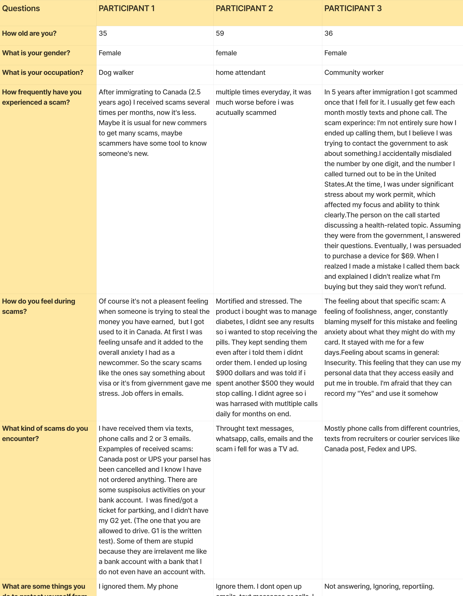
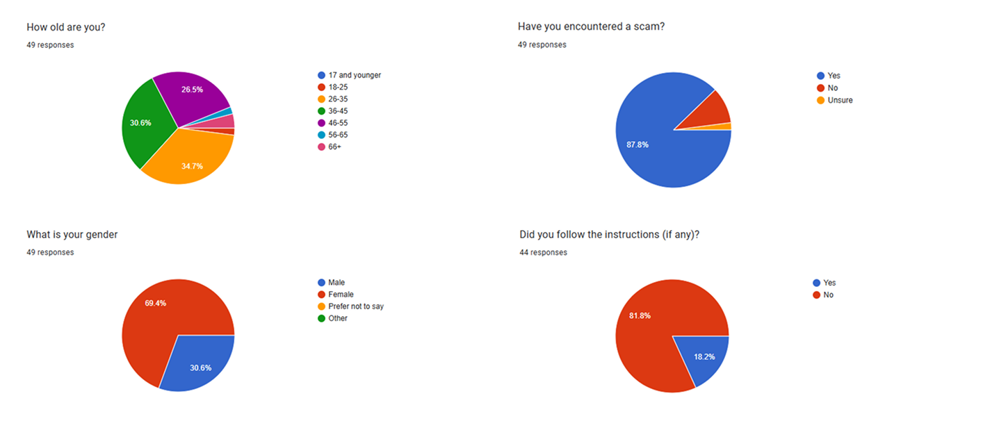
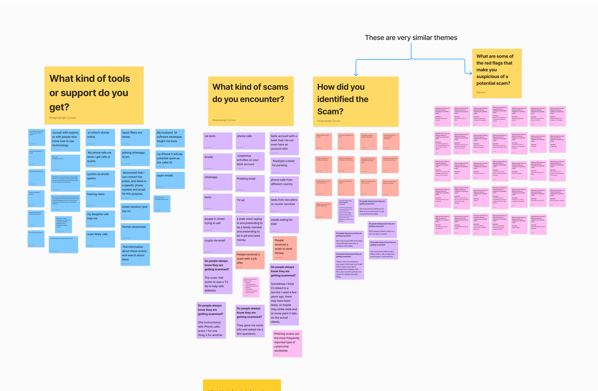
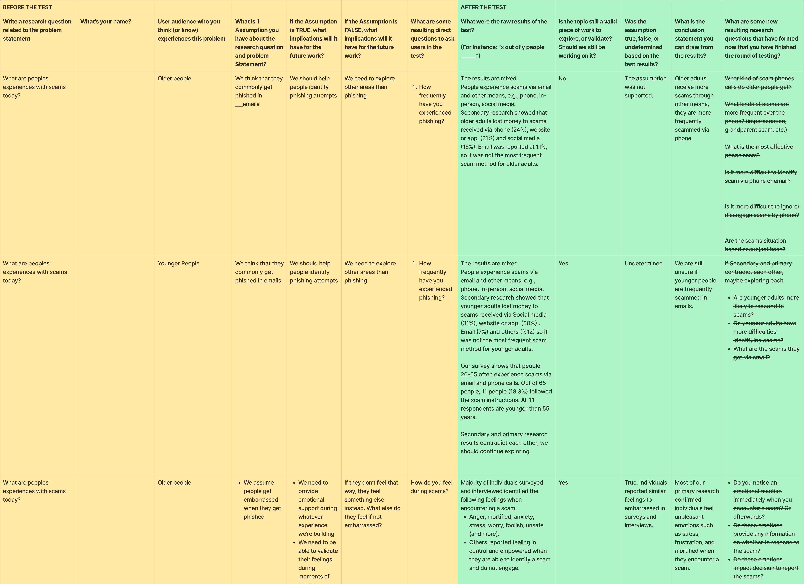
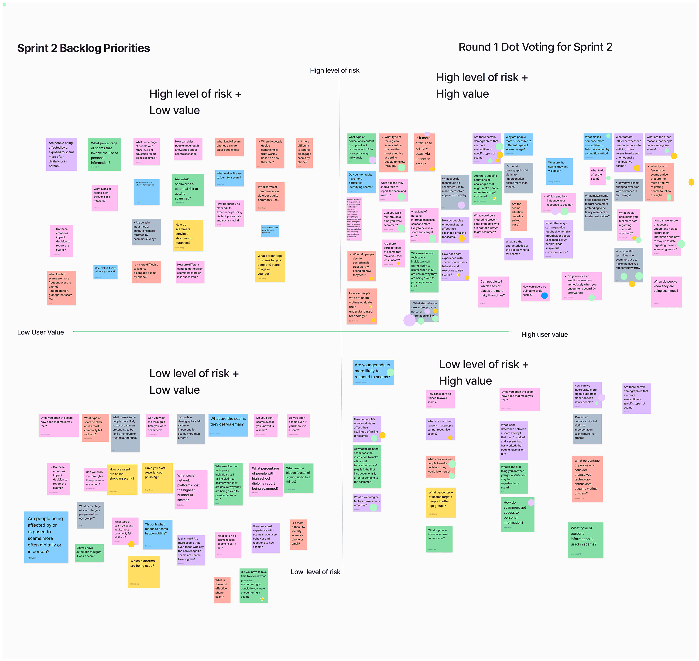
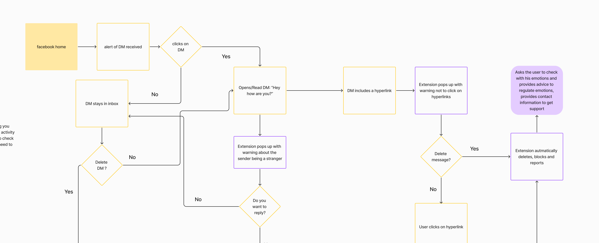
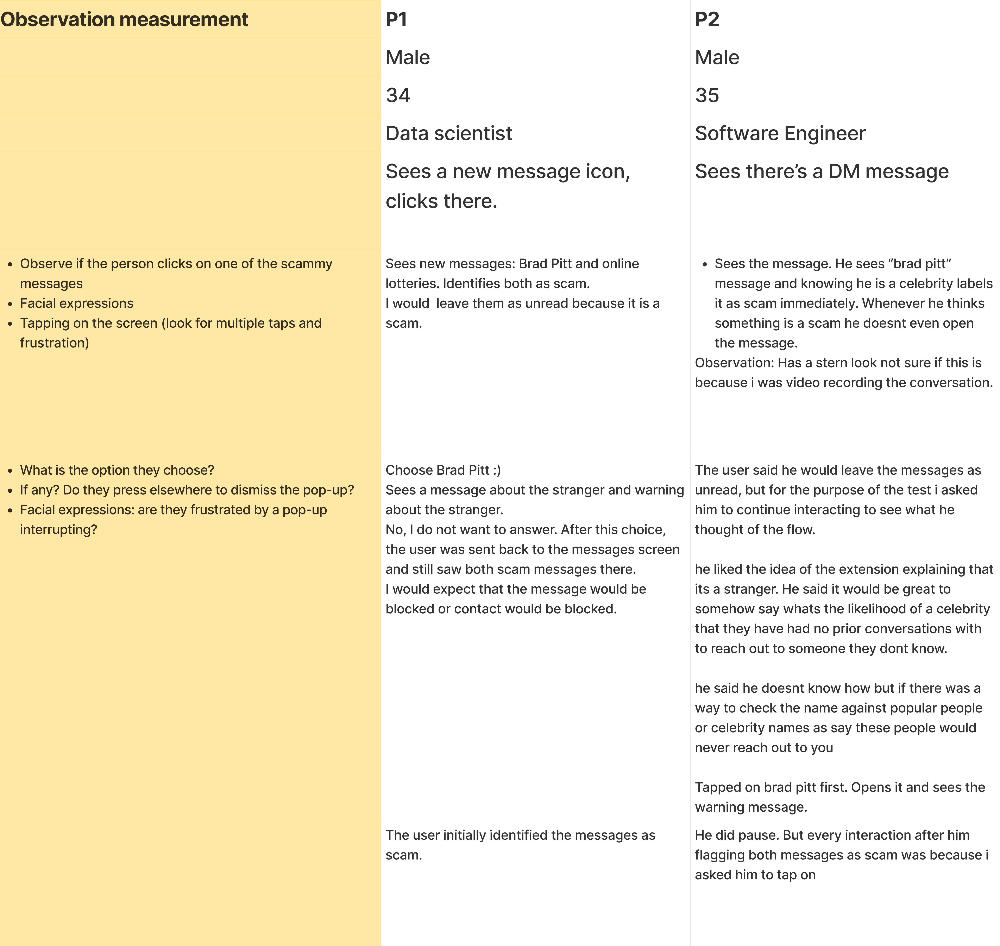

UX Research: Online safety
Tech Fleet · 5-weeks · 1 week sprints · Google Sprints, Continuous Discovery & Lean UX
About
Agile UX methods offer a way for teams to explore/answer any question they may have about their product, users, or business in just 5 days without developing and releasing anything. It helps teams get an informed direction for anything they're building or any unknown they're working with. With Agile UX you can keep risk down by quickly validating assumptions and making sure your team is always headed in the right direction while being guided by user observations, insight, and feedback.
This is a case study that was conducted with Tech Fleet, a non-profit organization giving designers, researchers, and leaders real time experience. The study consisted of around 10 researchers/designers. It was led by Tech Fleet founder Morgan Denner. It went for 5 weeks and meetings were held everyday Mon-Fri.
Objectives
- Practice building and managing an Agile UX process for teams.
-
Practice Agile UX methods like:
- Google Design Sprint
- Lean UX
- Continuous Discovery
- Apply Google Design Sprints to UX research and UX design work.
- Apply tools and processes that help streamline UX work and alignment.
Step 1
The first thing we did was find a problem that existed in the world to research and design for. We identified and chose a few main components to focus on that we felt were the most important areas to look into.
The problem
Online Scams
Secondary research consisted of these main questions:
- What kinds of scams do people experience?
- How do we define “scams”?
- Who are the users most vulnerable to scams?
- What are the most common scams today?
- Do people always know they are getting scammed?
Data was collected in large tables.
The data was synthesized.
Primary research was needed to collect information directly from the user answering the most important questions.
Interview materials were made including a screener, a script, and interview questions.
We ran interviews with 8 participants and collected data in tables.
A survey was also created.
Here were the results of the survey.
Much of the survey questions were also open-ended responses that led to various answers.
At the beginning of every week we synthesized and organized our data from what people said, and also the existing data we found. This was important because it helped us recognize patterns and themes that existed.
We used the scientific method to confirm or deny assumptions (hypothesis), and to build on what we discovered. If we thought something could be valid then we tested that with research to prove the validity or significance with qualitative and quantitative research. This led to new conclusions and new questions to further be investigated. 
As we discovered new themes and questions, we used prioritization matrices to focus and vote on the most important subjects. This was based on the level of risk and value if looked into or not. Each dot represented a vote.
A prototype concept was brainstormed to help users deal with social media scams. We used facebook messaging. A task flow was then created to begin integrating the concept as part of the app. The flow shows different paths a user could take once they have recieved a suspicious DM.
A basic prototype was created to be tested on users to see if they could understand the concept, and also to record any reactions that may be helpful in future iterations.
Based on what we saw, we found that emotional vulnerabilities played a large role in victims falling for scams, especially if it directly targeted them, seemed urgent, or believable. That feeling often led to being pressured, and feeling overwhelmed, which led to risky/hasty decisions. People reported that in times of uncertainty contacting someone they knew for advice was helpful. Using timeouts or breaks give the user a chance to reflect on their dicisions, or having emotional support was crucial and preventative.
Our research was only based on a small sample size, but with more time and participants, a more accurate generalization could have been formed on the most significant factors regarding victims and scams
A concept test was performed to test how users responded to the design and concept. We collected the data in a table.

We gave them scenarios, observered their experience, and recorded measurements like if they are clickling on the messages, their facial expressions, their frustration level from tapping, verbal comments, and how they reacted when using the features. They were asked to think outloud, respond to questions based on the scenario, research question, task, and more.
Even with such a minimal and basic protoype, users felt that our methods to deter scams were helpful.
By conducting primary and secondary research through Continuous Discovery and Lean UX, we were able to discover problems that people face today, and after speaking to them, learned what their direct experience has been with the problem.
By creating a prototype, and focusing on the people and the data, we were able to form discoveries and conclusive evidence. A solution was then created and tested, with promising results. This was the beginning of the process of continuous discovery that was seeing strong development, and could have grown into a full product with more time and research.
Conclusion
Researching for online safety and scam prevention required a large amount of research into the subject, how it affects people, and how to prevent it.
This was done by forming a research plan, creating interview questions, conducting interviews, conducting secondary research on existing data, forming conclusions, and making and testing new assumptions. The results impacted the design positively and gave a direction towards what people needed, and what they responded positively to. Continuous discovery and Lean UX on a sprint schedule was used in this case study to practice research with a process and an expected level of output. this was done on time and iteratively. Things changed many times as our ideas and assumptions of how things were predicted to be, proved to be different as we continued our research and discovery. With new information, we adapted to change, we used evidence, but still questioned the meanings of our discoveries, forming new assumptions, and continuously testing. The was the start of something strong.
In the United States in 2024, consumers filed about 2.6 million fraud reports with the Federal Trade Commission's Consumer Sentinel Network. $12.5 billion total losses were reported, and only 252 individuals were convicted.